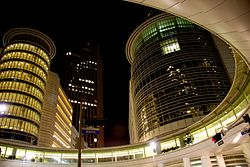

Хьюстон
Материал из Википедии — свободной энциклопедии
Хью́стон (англ. Houston, американское произношение:) — четвёртый по количеству жителей
город в Соединённых Штатах Америки и крупнейший город в штате Техас с населением 2 304 580 человек
по данным переписи населения 2020 года[2]. Хьюстон является административным центром округа Харрис,
а также главным экономическим центром агломерации Большого Хьюстона, занимающего пятое место среди
агломераций по населению с общей численностью 7 122 240 человек по результатам переписи 2020 года[3][4].
Город располагается в 50 километрах от Мексиканского залива на прибрежной равнине.
Хьюстон был основан 30 августа 1836 года и включён в состав республики Техас 5 июня 1837 года,
получив своё имя в честь Сэмюэла Хьюстона — главнокомандующего армией Техаса во время Техасской
революции и президента Республики Техас. Быстрое развитие порта и железных дорог в XIX веке, а также
начало добычи нефти и последовавшее развитие нефтяной промышленности в XX веке привели к быстрому росту
населения. В 1960-е годы количество жителей превысило один миллион человек, а в 2000-е — два
миллиона.
Город является ведущим мировым центром энергетической промышленности, а экономика города также
представлена предприятиями в области аэронавтики, транспорта и здравоохранения. Важнейшими объектами
для экономики и инфраструктуры города являются космический центр имени Линдона Джонсона, крупнейший
американский по международным грузоперевозкам порт, хьюстонский судоходный канал, крупнейший в мире
Техасский медицинский центр.
Содержание
- История
-
Этимология,
прозвище
- Основание
- Современный период
- Физико-географичская
характеристика
- Географическое положение
- Климат
- Экологическая обстановка
- Административное устройство
- Органы Власти,
административное деление
- Внешние связи
- Официальные символы
- Экономика
- Общее состояние
- Энергетика
- Информационные технологии
- Население
- Динамика и структура
населения
- Этнический
состав
История
Этимолгия и основание
 |
Город назван в честь Сэмюэла Хьюстона — главнокомандующего армией Техаса во время
Техасской революции (1835—1836) и президента Республики Техас (1836—1838, 1841—1844).
После окончания войны за независимость Техаса, в августе 1836 года предприниматели братья Август и
Джон Аллены купили 26,9 км² земли вдоль реки Буффало-Байю[en], планируя основать на ней населённый пункт[6].
Они хотели, чтобы будущий город стал столицей Техаса и крупным торговым центром[6][7].
|
| Самюэль Хьюстон |
Датой основания города принято считать 30 августа 1836 года[5][7],
когда братья Аллены разместили объявление о появлении города[7]. Город назвали в честь генерала Сэма Хьюстона,
возглавлявшего армию техасцев в битве при Сан-Хасинто во время войны против Мексики, позже
избранного президентом Техаса[5][6][7]. На январь 1837 года в посёлке проживало всего 12 человек, однако через
четыре месяца население возросло до 1500 человек[7]. 5 июня 1837 года город был включён в округ Гаррисберг (ныне
Харрис)
и стал временной столицей Республики Техас, которой оставался до 1839 года[7][8]. Первым мэром Хьюстона стал Джеймс
Холман[7][8].
Основание

Место, где был основан город
В 1840 году жители Хьюстона создали торговую палату, деятельность которой была направлена на развитие бизнеса
по морским перевозкам и недавно построенного порта на Буффало-Байю[9], в течение первых четырёх лет палата
стремительно
развивалась[10]. Значимость торговой палаты в экономике росла, в 1853 году Законодательное собрание Техаса выделило
денежные средства на улучшение каналов Буффало-Байю[11]. В 1846 году город вошёл в состав США вместе с Республикой
Техас.
К 1860 году были проложены железные дороги, связавшие Хьюстон, Галвестон и Бомонт[12]. В этом же году Хьюстон стал
железнодорожным узлом для экспорта хлопка[8]. Во время гражданской войны город служил штабом генерала Джона
Магрудера, использовавшего его в качестве организационного пункта для сражения у Галвестона[en][13]. В 1860-х годах
продолжал развиваться важный для экономики города объект — канал на Буффало-Байю[14]. С середины XIX века началась
активная торговля между Хьюстоном и близлежащими городами; к 1890 году город стал железнодорожным центром
Техаса[15].
К концу века в городе уже были электрическое освещение, улицы из блоков и булыжников[15]. Городской общественный
транспорт представляла конка[15].
XX век
.jpg)
Мэйн стрит, 1908
В 1900 году на Хьюстон обрушился Галвестонский ураган, продолжавшийся с 27 августа по 12 сентября[16].
В пересчете на сегодняшний курс ущерб составил бы $526 млн, погибло 8 тысяч человек[17]. В следующем году
было найдено большое месторождение[en] нефти вблизи города Бомонт, что послужило началом развития нефтяной
промышленности в Техасе[18][19]. В 1902 году президент США Теодор Рузвельт утвердил проект стоимостью в $1 млн
на реконструкцию хьюстонского судоходного канала[19]. К 1910 году численность населения города достигла 78 800
человек, почти в два раза превысив количество жителей проживавших в Хьюстоне в 1900 году[20]. В 1914 году
президент США Вудро Вильсон принял участие в открытии нового глубоководного порта Хьюстона, а через год был
открыт хьюстонский судоходный канал[21]
|
Именно кондиционирование воздуха! Именно оно было основой для стремительного роста Хьюстона в 1950 году,
когда он стал наиболее оснащённым кондиционерами городом в мире. Именно это стимулировало многие
корпорации переместить свои штаб-квартиры в Хьюстон.
|
Физико-географическая характеристика
Географическое положение

Хьюстон со спутника
Хьюстон расположен в 50 километрах от Мексиканского залива на прибрежной равнине. Значительная часть города была
построена на лесных угодьях, болотах и прериях, они до сих пор сохранились в близлежащих районах около Хьюстона.
Город расположен на территории, для которой обычны частые ливни и дожди, поэтому для Хьюстона наводнения —
постоянная проблема[41]. Высота города над уровнем моря в среднем 15 метров[42], самая высшая точка — северо-запад
Хьюстона (38 метров)[42]. Площадь города составляет 1 739,62 км², из которых 1 658,72 км² занято сушей, а 80,9 км² —
водная поверхность[43].
Климат
Город находится в зоне субтропического муссонного климата по классификации Кёппена (Cfa).
Преобладающие юго-восточные ветры с Мексиканского залива дуют на протяжении всего года[44]. Большая влажность в
городе обусловлена близким присутствием Мексиканского залива. Влажность воздуха достигает утром 90 % и к полудню
снижается до 70 %[45]. В среднем 90 дней в году — солнечные, большая часть которых в октябре и ноябре[44]. 160 дней
в
году — облачные, большая часть — с декабря по май[44].
Весной и летом в городе жарко и влажно: средняя температура весной 21 °C, а летом — 28,8 °C. Из-за высокой
температуры почти во всех транспортных средствах и зданиях установлены кондиционеры. Абсолютный максимум температуры
был зарегистрирован в 2000 и 2011 годах, когда она составила 42,8 °C. На Хьюстон часто обрушиваются ураганы,
самые крупные из которых за последние десятилетия — «Эллисон» и «Айк». Осень — достаточно тёплое время года,
особенно
сентябрь. Температура в этом месяце выше, чем в мае. Средняя температура осенью составляет 21,8 °C, а среднее
количество осадков — самое высокое в году (359,7 мм). Зима тёплая. Самая низкая температура была зарегистрирована в
1930 году — −15 °C. Средняя температура зимой составляет 12,6 °C, а максимальная была зарегистрирована в 1986 году —
32,8 °C. 18 дней в году температура опускается ниже 0 °C[44]. Обычно зимой осадки выпадают в виде дождя, но редко
могут
быть и в виде снега. Начиная с 1895 года, снег падал 35 раз, причём 21 раз устанавливался временный снежный
покров[46].
Дни с ясной и дождливой погодой в месяц (суммарно по часам)
| Месяц |
Январь |
Февраль |
Март |
Апрель |
Май |
Июнь |
Июль |
Август |
Сентябрь |
Октябрь |
Ноябрь |
Декабрь |
*- Год -* |
| Солнечное сияние, день |
10 |
10 |
9 |
8 |
8 |
8 |
7 |
8 |
10 |
10 |
8 |
9 |
103 |
| Дождь, день |
14 |
12 |
12 |
10 |
10 |
10 |
13 |
12 |
10 |
9 |
10 |
12 |
138 |
Экологическая обстановка

Парк в центре Хьюстона
Главными источниками загрязнения воздуха в Хьюстоне являются выхлопные газы от автомобилей, а также выбросы
от более чем 400 химических предприятий, в числе которых два крупных нефтеперерабатывающих завода и
нефтехимический комплекс вдоль судоходного канала и порта[64]. Ситуация осложняется метеорологическими
условиями: с апреля по октябрь в городе большое количество солнечных безветренных дней с высокими температурой
и влажностью, из-за чего выбросы оседают над городом[64]. Как следствие сложившейся экологической ситуации,
из всех болезней наиболее распространены респираторные и онкологические[65]. По данным американской лёгочной
ассоциации[en] в 2022 году Хьюстон занял 22 место в списке самых загрязнённых городов США по концентрации
вредных веществ и 8 место по концентрации озона[66]. В начале 2000-х ситуация с качеством воздуха была ещё хуже:
Хьюстон уступал по уровню загрязнения только Лос-Анджелесу[67].
Не лучше ситуация с водой — Хьюстон занимает 95-е место из 100 крупнейших городов США по качеству воды[68].
Административное устройство
Органы власти. Административное деление
Главой Хьюстона является мэр[69]. Мэр является главным должностным лицом, он отвечает за общее руководство
городом, подписывает все постановления и законы, принятые городским Советом[en] и следит за тем, чтобы они
выполнялись[70]. Помимо этого, мэр представляет Совету годовой бюджет города для одобрения, а затем предоставляет
Совету информацию о его исполнении[70]. Глава города избирается гражданами города путём голосованию максимум
на два срока, по 4 года каждый[71]. Со 2 января 2016 года пост мэра занимает Сильвестр Тёрнер — член
Демократической партии[72]. Городской Совет Хьюстона состоит из одиннадцати человек, выбранных от
одиннадцати избирательных округов, и пяти человек, выбранных от всего города в целом[73]. Члены Совета
избираются на такой же срок, как и мэр[73]. В полномочия Совета входят назначение избранного мэра, изменение и
подтверждение бюджета города, управление городской недвижимостью, ассигнование и выпуск облигаций, заключение
контрактов и одобрение городских расходов на сумму более $50 тысяч[73]. Городской контролёр, в обязанности
которого входит распределять средства и финансировать городской бюджет, избирается независимо от мэра и
совета[74]. Со 2 января 2016 года эту должность занимает Крис Браун[75].
Хьюстон — самый крупный город США без административного деления[76]. Город является административным центром округа
Харрис, а также главным экономическим центром Большого Хьюстона.
Внешние связи
В мэрии Хьюстона есть отдел по международной торговле и развитию, занимающийся взаимодействием администрации города
с международным бизнес-сообществом[77]. В 2018 году Хьюстон посетило 165 иностранных делегаций из 40 стран[78].
В Хьюстоне расположены консульства 82 стран[79]. По количеству консульств город занимает в США третье место
после Нью-Йорка и Лос-Анджелеса[80]. Более 430 хьюстонских компаний имеют офисы за рубежом, а также в городе
располагаются офисы 800 зарубежных компаний[80].
с 9 по 11 июля 1990 года в городе состоялся 16-й саммит G7[en]. Ежегодно в Хьюстоне проводятся международные
конференции, такие как Offshore Technology Conference[en] и CERAWeek[en], где обсуждаются вопросы энергетики
[81][82].
На данный момент у Хьюстона 17 городов-побратимов[83].
Официальные символы
Флаг города был принят в 1915 году[84]. На нём изображена пятиконечная звезда на синем фоне.
Внутри звезды — паровоз типа 2-2-0 (по американской классификации) — 4-4-0 «American»[85]. Это связано с тем, что в
конце XIX — начале XX вв. паровозы данного типа были широко распространены на американском континенте, в
частности именно они водили поезда в город. Новый флаг представлял собой немного изменённый предыдущий вариант
флага города, принятый ещё в 1840 году[85]. Причиной была смена локомотивов: паровоз типа 2-1-0, распространённый в
1830—1850 гг.[86], был заменён на паровоз типа 2-2-0, изображённый на флаге по настоящее время.
Печать Хьюстона была утверждена городским советом Хьюстона 24 февраля 1840 года[87].
Печать была разработана бывшим мэром Хьюстона Фрэнсисом Муром-младшим[en]. Одинокая звезда — один из символов
Техаса и её присутствие на печати обозначает принадлежность города к Республике Техас. Локомотив отождествляет
прогресс, олицетворением которого железнодорожное движение и было во время принятия печати. Хьюстон служил
железнодорожным центром на протяжении многих лет[88]. Плуг символизирует сельское хозяйство Техаса[87].
Экономика
Общее состояние
Крупнейшие компании базирующиеся в Хьюстоне
 |
- - -Техас- - - |
- - - Компания- - - |
- - - - США- - - - |
| 4 |
Phillips 66 |
29 |
| 9 |
Sysco[en] |
70 |
| 10 |
ConocoPhillips |
ConocoPhillips |
Хьюстон является одним из ведущих городов мира в сферах добычи и переработки нефти и природного газа, из-за
чего часто именуется «энергетической столицей мира»[90][91][92], а также биомедицинских исследований и
аэронавтики. Также Хьюстон имеет репутацию «зелёного города», так как половина электроэнергии производится с
помощью солнечных и ветряных установок[93]. Большую роль в транспортной сфере города играет порт. В Хьюстоне
базируется 21 компания из списка Fortune 500, которая входит в 500 крупнейших компаний[89].
Валовой внутренний продукт агломерации Большого Хьюстона в 2020 году составил $488,16 млрд и является седьмым по
величине среди показателей других агломераций. Крупнейшими пятью отраслями в формировании в структуре ВВП
являются: операции со страхованием, недвижимостью, арендой, лизингом и финансами — 18,4 %, оказание
профессиональных и бизнес-услуг — 14,5 %, промышленное производство — 14,4 %, государственный сектор — 8,8 % и
образовательные, медицинские и социальные услуги — 6,2 %[94].
По итогам 2020 года экспорт Большого Хьюстона составил $129,5 млрд, а импорт — $67,4 млрд. Основными статьями
экспорта являлись: нефтепродукты — $73 млрд (56,4 %), химикаты — $12,5 млрд (9,6 %), пластик и продукты из
пластика — $9,2 млрд (7,1 %), промышленное и компьютерное оборудование — $8,3 млрд (6,4 %), транспортные
средства и запасные части к ним — $3,6 млрд (2,8 %). Значимыми статьями импорта стали: нефтепродукты — $13,9
млрд (20,6 %), промышленное и компьютерное оборудование — $10.2 млрд (15,1 %), электрооборудование — $5,3 млрд
(7,9 %), изделия из железа и стали — $4,1 млрд (6,1 %)[95][96].
Энергетика
В Хьюстоне находится более 5 тысяч энергетических компаний, связанных с ведением бизнеса в этом регионе[109].
По состоянию на 2021 год в городе находятся штаб-квартиры 13 энергетических и нефтяных компаний, входящих в рейтинг
500
крупнейших компаний США (Fortune 500): Phillips 66, Enterprise Products Partners[en], Plains All American Pipeline,
Baker
Hughes, ConocoPhillips, Occidental Petroleum, Halliburton, Kinder Morgan, EOG Resources, Cheniere Energy,
CenterPoint
Energy[en], Targa Resources[en], National Oilwell Varco. Хьюстон является членом Всемирного партнёрства
энергетических
городов[110]. Одной из самых крупных компаний, входящих в рейтинг Fortune 500 и обеспечивающих электроэнергией
город,
является компания CenterPoint Energy[en], которая обслуживает свыше 7 миллионов потребителей в восьми штатах:
Арканзас,
Индиана, Луизиана, Миннесота, Миссисипи, Огайо, Оклахома и Техас[111]. Другая крупная энергетическая компания
Calpine[en]
обладает парком из 76 электростанций разных типов c суммарной мощностью в 26 тысяч мегаватт, расположенных в 22
штатах США,
а также в Канаде и Мексике по всей территории США[112]. Компания насчитывает 2300 сотрудников, на Техас приходится
35 %
генерации электроэнергии, а 65 % — на остальные места деятельности компании[113]. Одна из электростанций Calpine,
именуемая
Channel Energy Center, расположена в Хьюстоне и её максимальная мощность составляет 827 мегаватт (базовая — 743
мегаватт),
всего в Техасе расположено 12 электростанций компании[114].

Офис компании Шеврон
Хьюстон является одним из крупнейших производственных центров мира для нефтехимической промышленности. В городе
располагаются
больше 3 700 организаций, работающих в сфере нефтехимии[115]. Также в хьюстонском регионе находятся 9
нефтеперерабатывающих
заводов, перерабатывающих 2,3 миллиона баррелей в день, что составляет 13,2 % от всей переработки в США[115]. В
городе
находится 17,5 % рабочих мест, занятых в сфере нефтехимии, из всех мест в США (112,6 тысячи из 643,3 тысяч)[115].
По итогам 2020 года на Большой Хьюстон, в котором насчитывалось 618 предприятий химической отрасли, приходилось 44 %
базовых нефтехимических мощностей страны, в частности, в агломерации было произведено 44 % полиэтиленовых, 40,1 %
полипропиленовых и 31,6 % поливинилхлоридных смол от всего производства в США соответственно
Информационные технологии
В Хьюстоне находятся более 400 компаний по разработке программного обеспечения[128]. Важную роль в информационных
технологиях Хьюстона играет «Транстар-центр» — партнёрство четырёх правительственных учреждений, которые несут
ответственность за оперативную информацию по чрезвычайным обстоятельствам[129]. С момента своего создания в 1999
году
Хьюстонский технологический центр[en] стал городским центром технологий и предпринимательства, оказавшим помощь
более
300 развивающимся компаниям, повысившим суммарные доходы от этой отрасли более чем на $2,5 млрд и создавшим около 5
тысяч новых рабочих мест
Население
Перепись населения
| - - -Год- - - |
- - - Население- - - |
- - - - Процент- - - - |
| 1950 |
596 163 |
55% |
| 2000 |
1 953 631 |
19.8% |
| 2020 |
2 304 580 |
9.7% |
Согласно данным переписи населения США в 2020 году в городе проживало 2 304 580 человек[2], это на 9,7 % больше, чем в 2010
году[20]. Население города, начиная с его основания, постоянно растёт: в 1960-х годах оно достигло 1 млн жителей, а
в 2000-х годах превысило 2 млн. Плотность населения в среднем составляет 1389 чел./км².
Средний возраст граждан составляет 33,3 года, а возрастной состав населения в 2020 году был следующим образом: до
19 лет — 27,09 %; от 20 до 44 лет — 39,77 %; от 45 до 64 лет — 22,15 %; от 65 лет — 10,99 %[161]. Количество мужчин
от всего населения — 49,8 %, женщин — 50,2 %[161].
Этнический состав
По результатам переписи населения 2020 года этнический состав города выглядит следующим образом:
латиноамериканцы — 44 % (1 013 423 человек), белые люди — 23,7 % (545 989 человек), афроамериканцы — 22,1 %
(509 479 человек), азиаты — 7,2 % (165 189 человек), прочие — 3,1 % (70 500 человек).
За 2010-е годы в процентном отношении доля латиноамериканцев незначительно возросла (919 668 человек 43,8 % в 2010 году),
доля белых и афроамериканцев уменьшилась (537 901 человек и 25,6 %, 485 956 человек и 23,1 % соответственно),
доля азиатов и иных национальностей увеличилась (124 859 человек и 6 %, 31 067 человек и 1,5% соответственно)